Unity 引擎在管理托管堆上内存时没有使用系统自带的内存分配和释放的的函数，如 malloc 和 free 来分配和释放内存，而是使用一套 GC 算法来管理托管堆上的内存分配和释放。使用 il2cpp 编译的 unity 项目使用就是 BoehmGC 算法
BoehmGC 算法
算法思路
BoehmGC 是一种 mark-sweep（标记-清扫）算法，大致思路分为四个阶段
准备阶段： 将每个在托管堆中创建的对象关联一个标记位，没有被引用标记为 0，引用标记为 1。
标记阶段： 从根部内部节点（静态变量，栈，寄存器）出发，扫描托管堆中的内存节点，被引用的内存节点标记为 1。
清扫阶段： 遍历所有节点将没有标记的节点全部清空。
结束阶段： 触发 GC_register_finalizer 注册的回调事件。
算法特点
BoehmGC 是一个保守式 GC，它不会直接访问对象的内部结构和引用关系，而是直接扫描内存数据识别出可能指向对象的指针，但这种识别并不准确它并不能分辨这是一个内存值还是指针，只会将所有内存当做指针区尝试。所有在一些情况下会造成误判，应该被销毁的垃圾 返回被标记了没销毁掉。
内存分配流程
关键函数
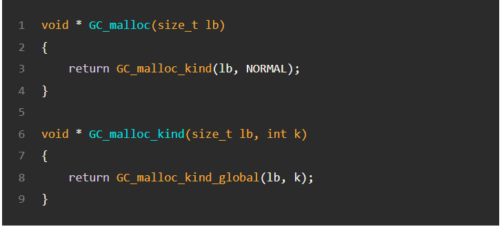
GC_malloc 是 BoehmGC 中用来代替 malloc()函数，只接受一个参数 即需要分配的内存大小。 内部调用的 GC_malloc_kind()函数接受的两个参数，分别表示分配内存大小和分配内存的类型。对于分配内存的类型有三种，PTRFREE, NORMAL, UNCOLLECTABLE。
PTRFREE： 无类型的内存分配，无法得到对象类型，如果法线指针校验地址，就会认为引用了该指针地址指向的对象。
NORMAL ：无指针内存分配， 分配的对象无任何指针信息。
UNCOLLECTABLE ： Ｂｏｅｈｍ 为了辅助内存管理而分配的内存，是不需要标记和回收。
大内存和小内存
分配内存是会判断分配的内存是否大于 2048 字节，大于则分配大内存小于则分配小内存
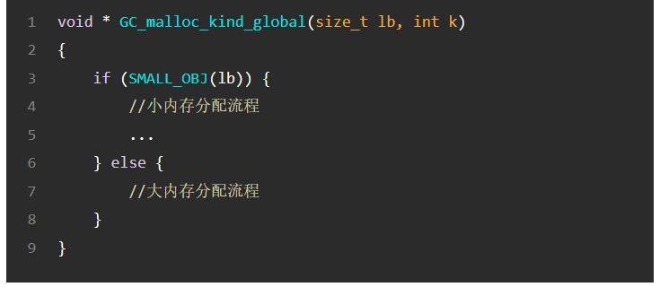
小内存分配
尺寸对齐
对于小内存分配并不是直接分配实际的大小，而是分配 16 字节整数倍大小保证按指针对齐的方式进行管理。其中有一个粒度的概念，表示以粒度为最小单位进行分配，最小粒度大小为 16 字节 ，最大不能超过 2048 字节。
GC_size_map[] 是一个尺度表，传入原始分配的大小，返回需要的粒度的个数。
空闲链表-ok_freeList
确定粒度 GRANULE ，然后从 ok_freeList 链表中查看是否有相应的空闲内存块，如果有则直接返回。在算法中维护了 obj_kind 数据结构
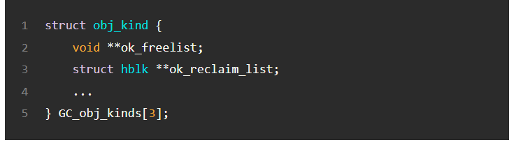
GC_obj_kinds[3]对应着上文提到的三种内存分配的类型，PTRFREE, NORMAL, UNCOLLECTABLE。在每个 obj_kind 结构体中都维护了一个 ok_freelist 二维指针链表，来存放空闲内存块；一共有 128 个链表，每个链表中的内存块的大小为 （n+1)*16, n 就是粒度的个数。
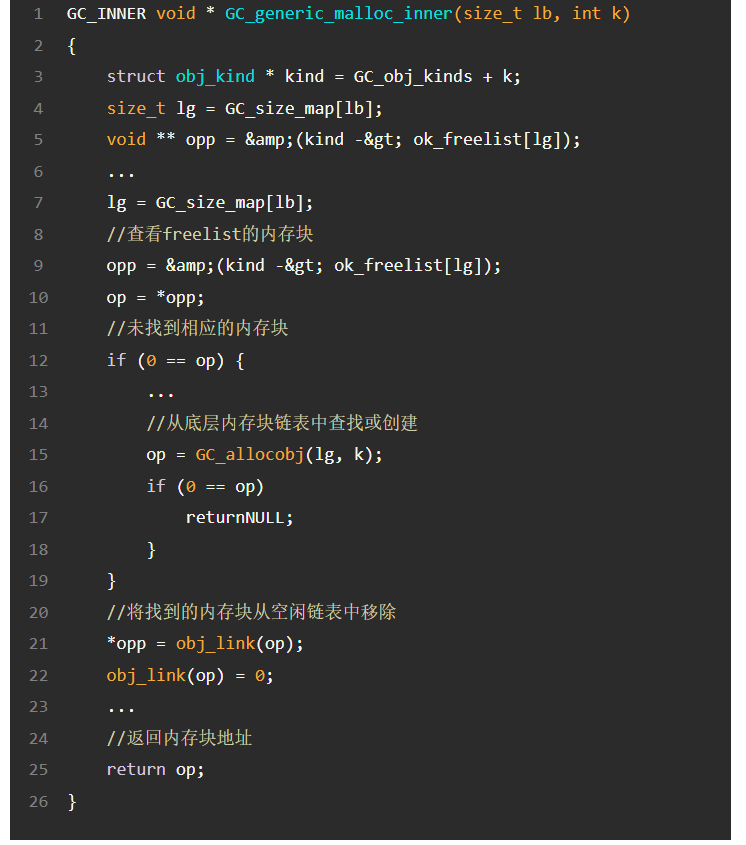
从图中可以看到 首先去计算粒度 GRANULE 的个数，然后查找对应的链表 ok_freelist[n], 如果对应链表中的内存块个数大于 0，返回第一个内存块并将其从链表中移除。
如果 ok_freelist 中没有空闲的内存块，则调用 GC_allocobj()去底层查找可用的内存
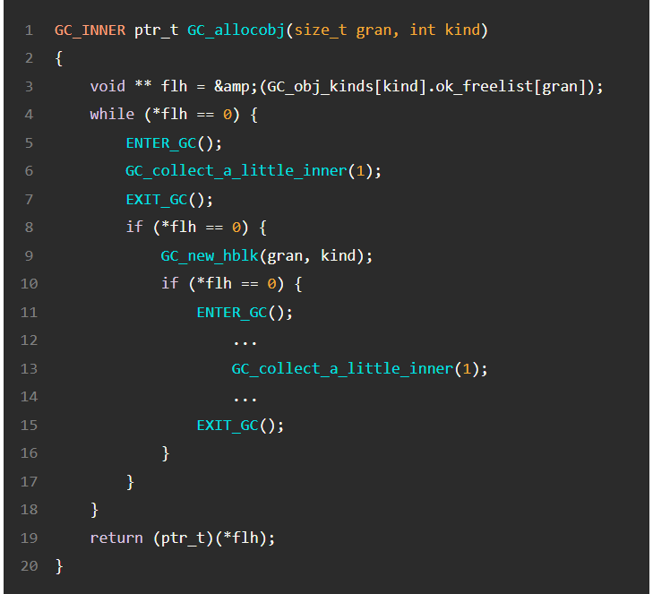
GC_allocobj 的核心就是调用 GC_new_hblk 去底层内存池获取内存，并查看内存池是否内配了内存。
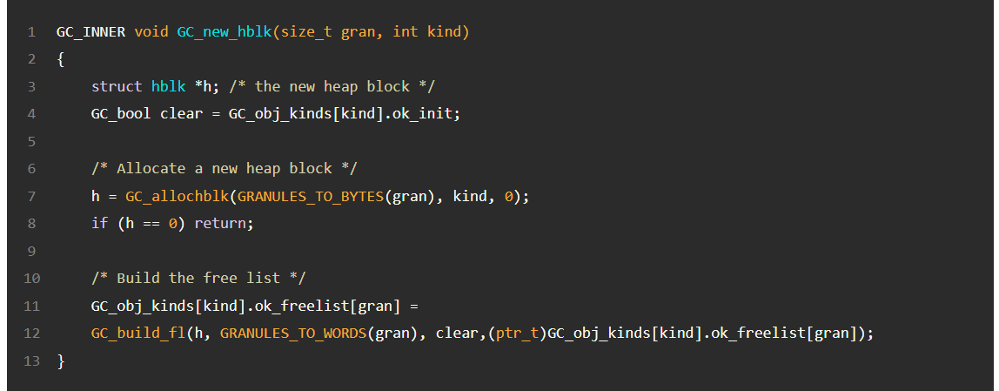
GC_new_hblk 的主要逻辑有两步，第一步调用 GC_allochblk 方法进一步获取内存池中的空闲内存，第二步调用 GC_build_fl，利用内存中返回的内存构建 ok_freelist，提供给上层使用。
核心内存块链表-GC_hblkfreelist
底层内存池的实现类似于 ok_freelist, 维护了一个空闲的内存块链表指针链表 GC_hblkfreeList，与 ok_freelist 不同的是链表中的内存块的基本单位是 4k,即一个页的大小。CG_hblkfreelist 中一共有 60 个链表，每个链表的内存块大小不相同，都是 4k 的整数倍。但是最后一个链表的内存块大小不是等大的。
内存块-hblk, 头部信息-hblkhdr
链表中的内存块都是 4k 的整数倍，一个 4k 大小的内存块被称为 hblk。
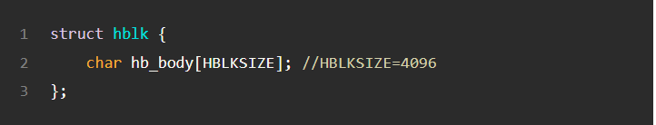
每一个 hblk 都有一个头部信息 hblkhdr,用于描述内存块的状态。
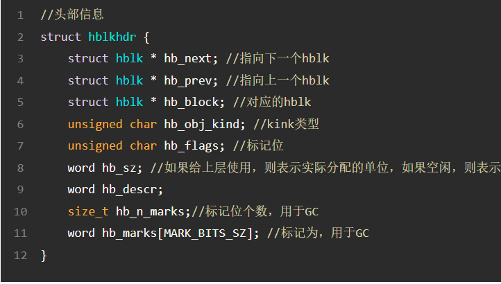
hb_next 表示 hblkfreelist 链表中下一个内存块，hb_bock 指向对应的内存块， hb_obj_kind 表示内存块的类型， hb_flags 是标记位，用于记录一些信息， hb_sz 表示内存块本身的大小。 hblkhdr 是存储在全局队列中，GC 运行时需要提取里面的关键信息。
hblk 内存块查找
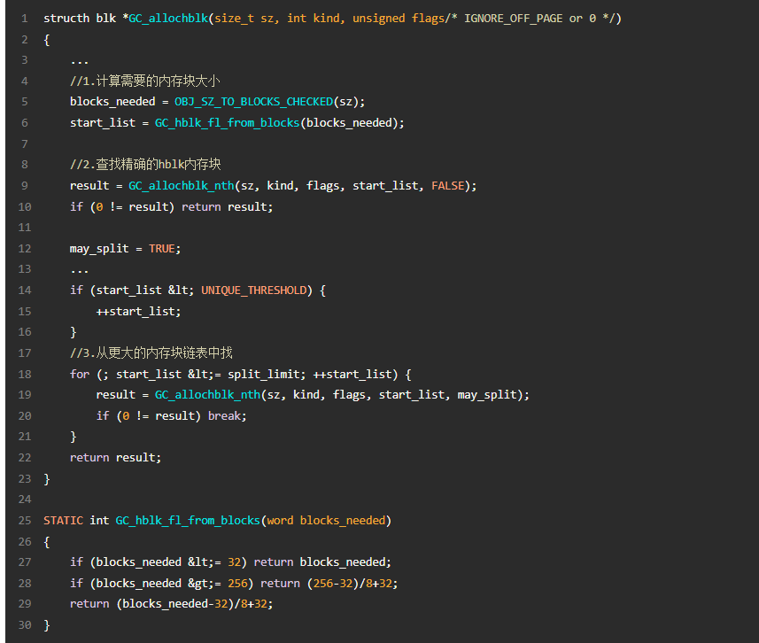
1.根据上层需要分配的内存大小，计算出需要分配的 hblk 的个数。
2.CG_hblk_fl_frong_blocks 会根据需要的内存块数量，在 GC_hblkfreelist 链表中查找，返回满足条件的列表下表 start_list。
3.如果找到则直接返回内存亏。
4.没有找到 则逐渐增大 start_list.
大内存分配
不同于小内存分配，大内存分配的内存都大于 2048 字节，使用 GC_generic_malloc 方法
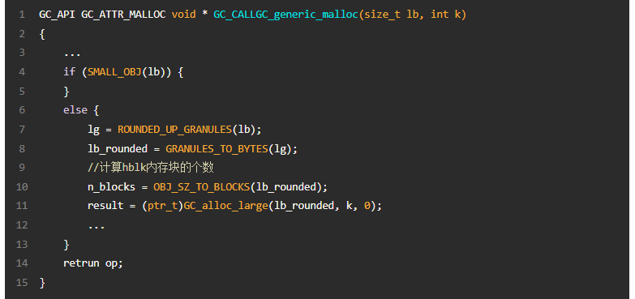
OBJ_SZ_TO_BLOCKS 用于计算 hblk 的个数，然后调用 GC_alloc_large 分配内存
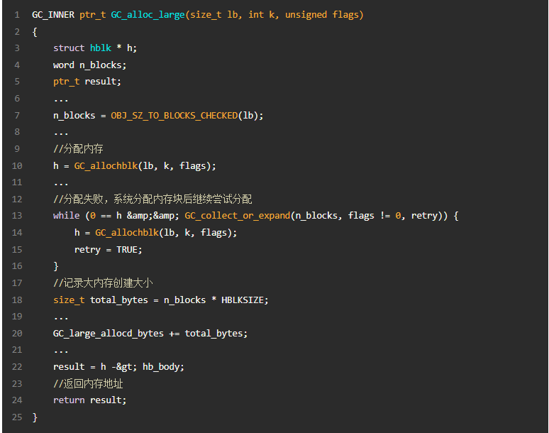
查找空闲内存块
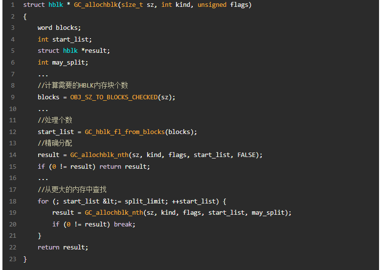
和小内存查找内存块的逻辑一样，首先通过 GC_hblk_fl_from_blocks 计算得到 start_list，即从链表 GC_hblkfreelist[start_list]开始查找，如果找不到，则不断增加 start_list，从更大的链表中查找。不同点在于大内存分配的内存不会用来构建 ok_freeList 链表。
Hearder 信息存储逻辑
如上文说每个 hblk 内存块都有一个与之对应的 header 信息，来描述内存块的信息。分配内存块和 header 后，可以通过 SET_HDR 存户 header 信息，GET_HDR 找到 header 信息。
二维结构
header 存储在一个全局的二维结构中
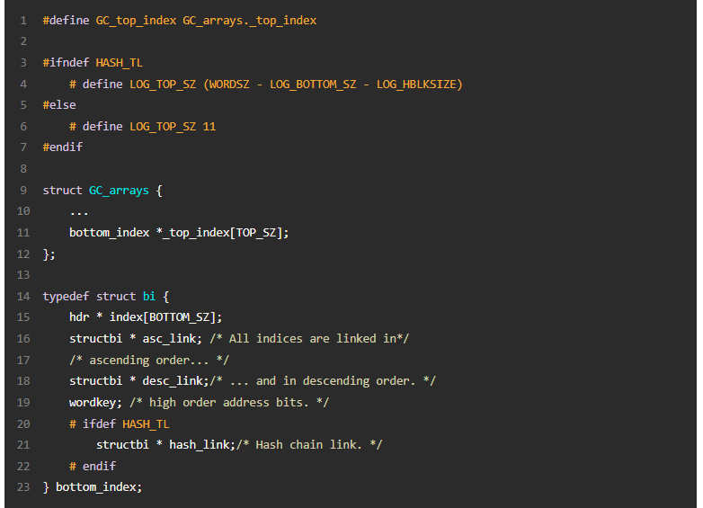
全局对象 GC_arrays 维护了数组_top_index，里面包含了一组 bottom_index 指针，每个 bottom_index 指针维护了一个 index 数组，里面存放了 Header 数据。
计算规则
对于每一个内存块地址 p, 通过 hash 算法，计算存储 header 的位置。
将一个 64 为内存块地址 p 分为三段，利用每一段信息确定位置
- 22~63 位，高 42 位用于计算_top_index 中数组下标
- 12~22 位， 用于计算 bottom_index 中的数组 index 的下标
- 0~12 位 用于计算具体对象内存在该内存块中的索引
辅助链表
创建了一个双向链表来维护 bottom_index 数据，可以快速查找向量的 bottom_index 数据
缓存结构
维护一个缓存结构 来存储对应 header 信息
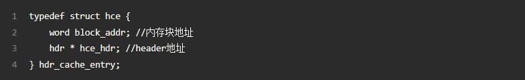
查找是先通过函数查找提高效率，通过宏 HC_GET_HDR 封装
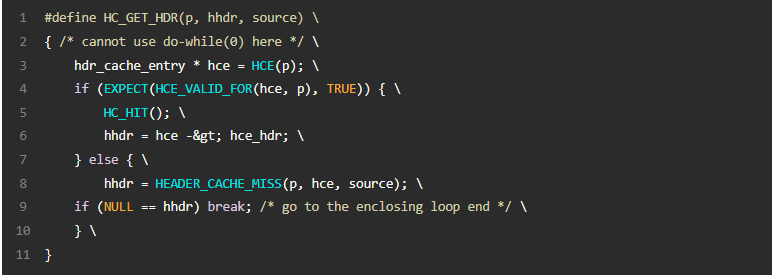
如果找到直接返回，找不到再通过 GC_header_cache_miss 查找，GC_header_cache_miss 通过 HDR(p)方法查找 header 信息
总结
这篇文章中我们介绍了 BoehmGC 算法的主要过程和特点，从内存分配调用入口 GC_malloc,到大小内存分配 GC_malloc_kind_global,逐步展开大小内存的内配的过程以及分配上的差别，阅读以上内容可以对 BohmGC 内存分配的过程和原理有个大致的了解，接下来将介绍 Boehm 算法内存回收的过程。